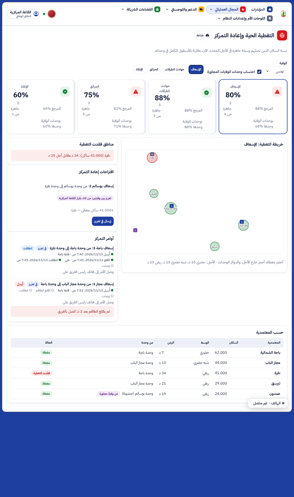
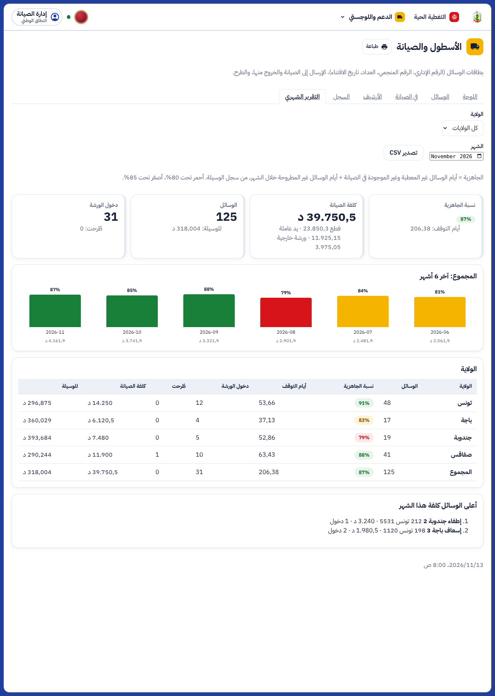
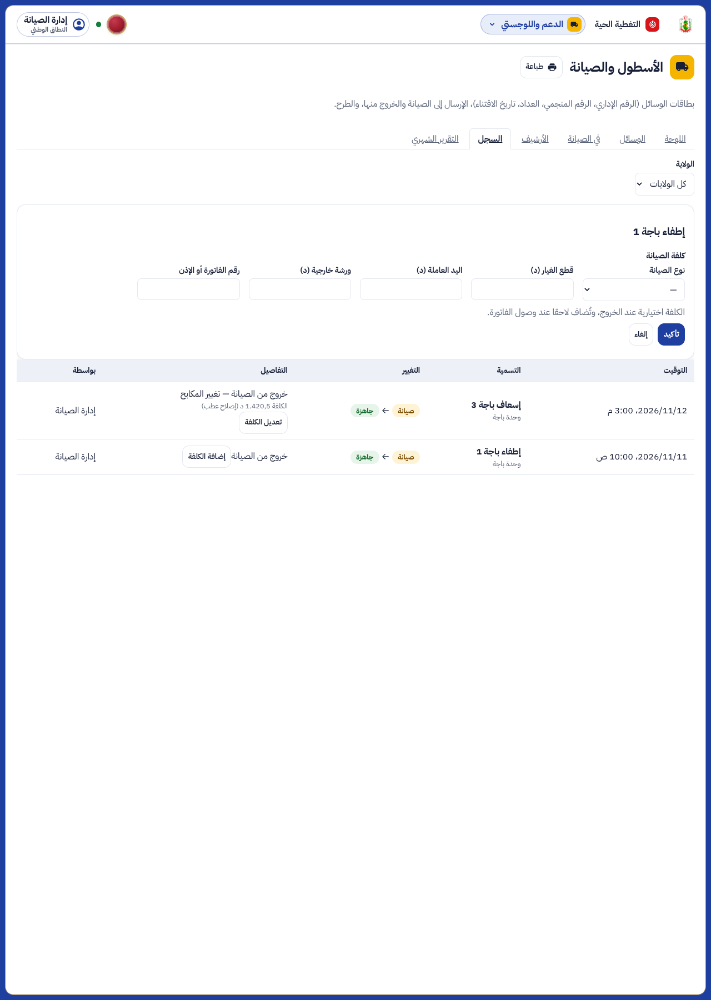
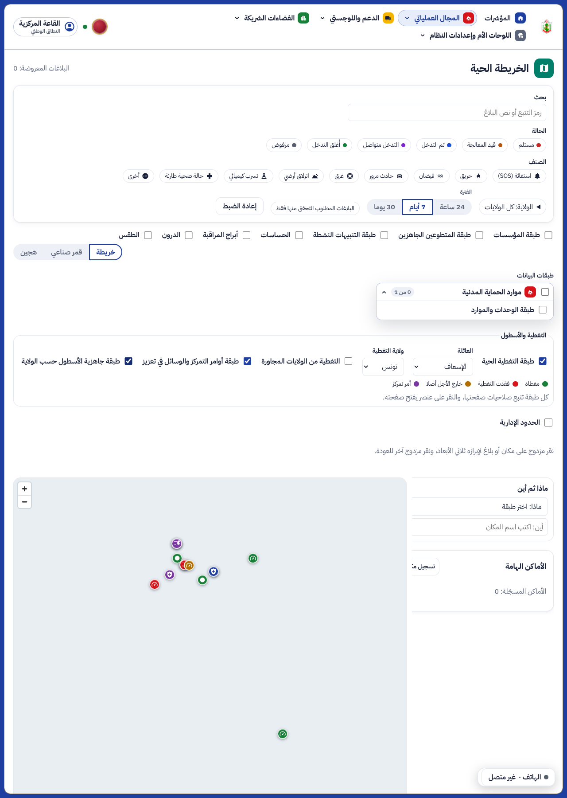

ء-حماية e-Himaya
تقرير متابعات OS3: إشعار الطاقم، زمن الخروج المقاس، كلفة الصيانة والجاهزية الشهرية، التغطية بين الولايات، وطبقات الخريطة الرسمية
1. ما أُنجز
- OS3-1 أمر التمركز يصل إلى الطاقم: كل إرسال في تعزيز أو عودة إلى الوحدة يكتب أمرا ويرنّ هاتف رئيس الفريق المناوب على الوسيلة (إشعار دون محتوى). يظهر الأمر في تطبيق الأعوان فوق المهام بأزرار «اطّلعت» و«انطلقنا» و«وصلنا»، والقاعة تتابع الخطوات في صفحة التغطية. أمر لم يُفتح بعد دقيقتين (قابلة للضبط) يصير أحمر: «اتصل بالفريق». أمر أحدث أو عطب أو صيانة أو طرح يغلق الأمر الجاري.
- OS3-2 زمن الطريق الفعلي وزمن الخروج المقاس: محرك الطرقات مفعّل افتراضيا في الإنتاج، ويعود إلى المسافة المستقيمة إن توقف. زمن الخروج يُقاس لكل وحدة من مهامها (من الإسناد إلى «في الطريق»: الوسيط و9 من 10)، والوحدة التي لها أقل من 20 مهمة تبقى على الافتراضي.
- OS3-3 الكلفة والجاهزية: كلفة الإقامة في الورشة (النوع، القطع، اليد العاملة، الورشة الخارجية، رقم الفاتورة) عند الخروج أو لاحقا من السجل. تبويب «التقرير الشهري» في صفحة الأسطول: نسبة الجاهزية لكل ولاية وشهر من سجل الوسيلة، الكلفة، دخول الورشة، الطرح، آخر 6 أشهر، أعلى الوسائل كلفة، تصدير CSV وطباعة.
- OS3-4 التغطية بين الولايات: القاعة المركزية تحتسب وحدات الولايات المجاورة (40 كم)، بلون بنفسجي، مع نسبة التغطية بوحدات الولاية وحدها، واقتراح «تعزيز بين ولايتين» بقرارها.
- الخريطة التفاعلية الرسمية: ثلاث طبقات تُكشف وتُحجب في «التغطية والأسطول»: التغطية الحية، أوامر التمركز في الطريق، جاهزية الأسطول حسب الولاية. كل طبقة تتبع صلاحيات صفحتها، والنقر يفتح الصفحة، ولا يُحذف شيء من مصدره.
- مبدأ التكامل: لا صفحة جديدة؛ كل بند دخل شاشة قائمة (التغطية، الأسطول، سجل الأسطول، الخريطة، شاشة المهام في تطبيق الأعوان).
[SIM]اللقطات من بيانات تجريبية لولاية باجة ووحدة بوسالم المجاورة، وتقرير شهري تجريبي لأربع ولايات.
2. لقطات من المنظومة
التغطية الحية للقاعة المركزية: الوحدات المجاورة، أوامر التمركز، زمن الخروج

التقرير الشهري للأسطول

إضافة الكلفة من سجل الأسطول

الطبقات على الخريطة التفاعلية الرسمية

3. الإعدادات الجديدة (العتبات)
| المفتاح | الافتراضي | المعنى |
|---|
coverage.order_ack_minutes | 2 د | أمر لم يطّلع عليه الطاقم بعدها يظهر أحمر |
coverage.turnout_measured | 1 | زمن الخروج المقاس لكل وحدة (0: زمن واحد للكل) |
coverage.turnout_days | 90 | أيام المهام المعتمدة في القياس |
coverage.turnout_min_missions | 20 | أقل عدد مهام للقياس |
coverage.neighbour_m | 40000 م | مدى الوحدات المجاورة للقاعة المركزية |
fleet.readiness_red / fleet.readiness_amber | 80 / 85 % | ألوان الجاهزية |
4. الاختبارات
- الخادم: 1316 اختبارا ناجحا (3 منها أعيدت بعد تنظيف قيمة إعداد متبقية في القاعدة المحلية)، منها 5 جديدة في
tests/test_coverage_followups.py؛ ruff و mypy نظيفان.
- اللوحة: 736 اختبارا ناجحا، منها 3 جديدة؛ فحص الأنواع والتدقيق نظيفان، والترجمة كاملة بالعربية والفرنسية والإنجليزية.
- تطبيق الأعوان: اختبار جديد لبطاقة الأمر وخطواته الثلاث، و
flutter analyze نظيف.
- المتصفح:
e2e/phase-os3b.spec.ts (3 اختبارات) ناجحة، ومنها اللقطات.
5. ما بقي (قائمة الانتظار)
- OS3-5: رسالة قصيرة إلى رئيس الفريق حين لا يُفتح الأمر في الأجل (اليوم تنبيه أحمر في القاعة).
- OS3-6: قبول قاعة الولاية المالكة لتعزيز تطلبه ولاية أخرى (اليوم ترسل القاعة المركزية مباشرة).
- OS3-7: تلميح «وحدة مجاورة ممكنة» للقاعة الجهوية.
الوثائق الخمس الكبرى تُحدَّث معا في نهاية المرحلة كما في docs/phase-end.md.